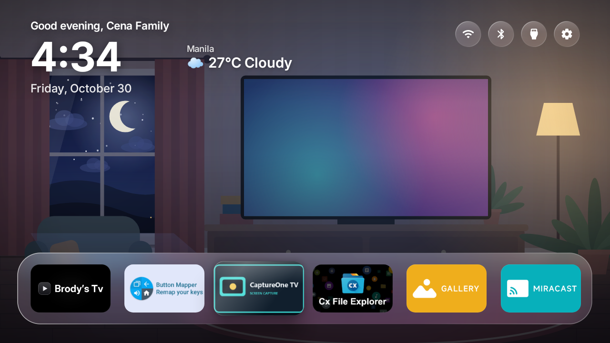
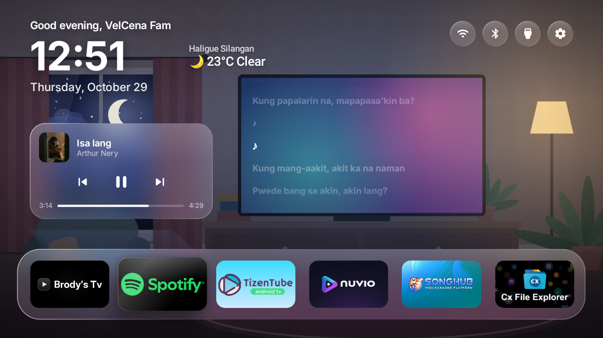
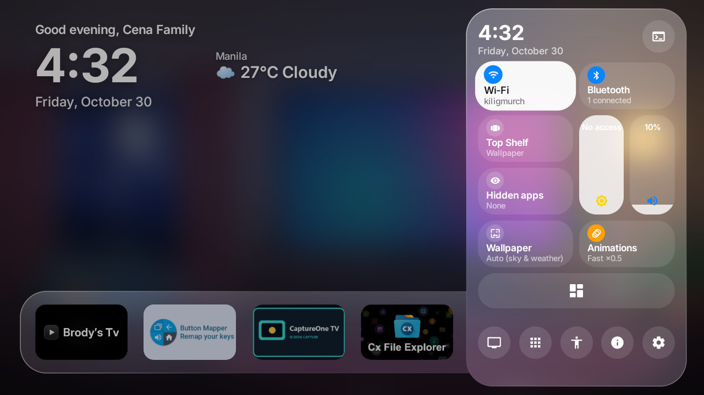
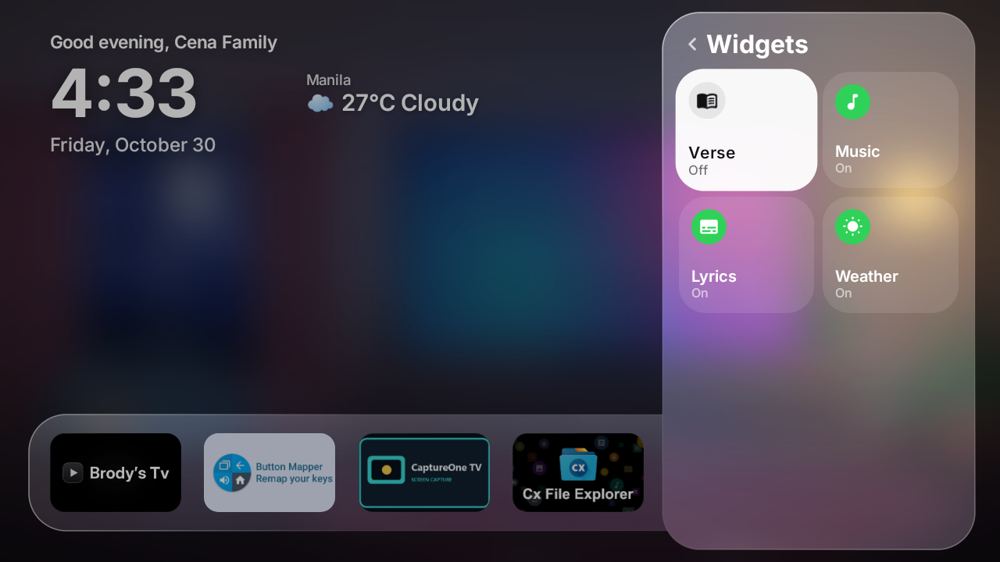
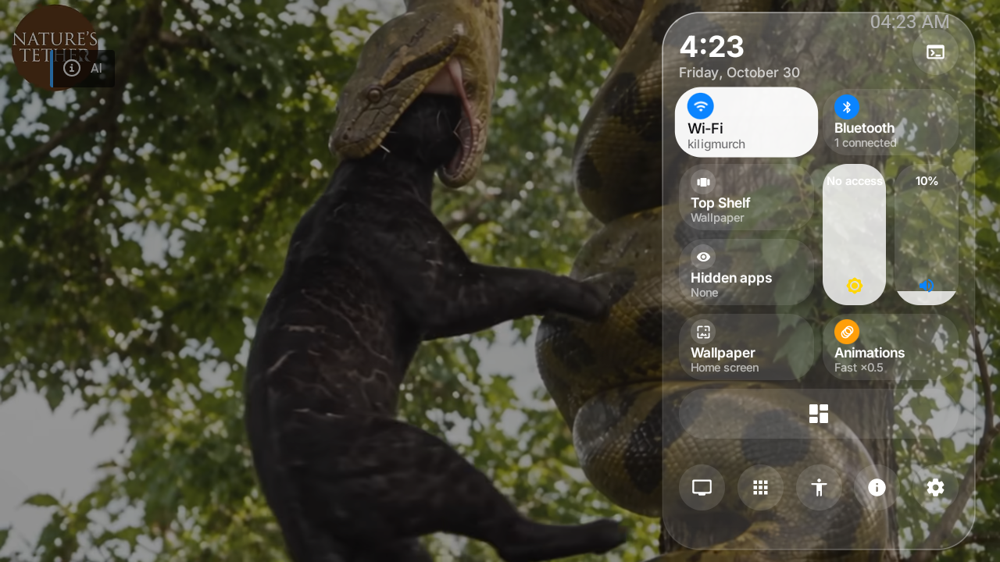
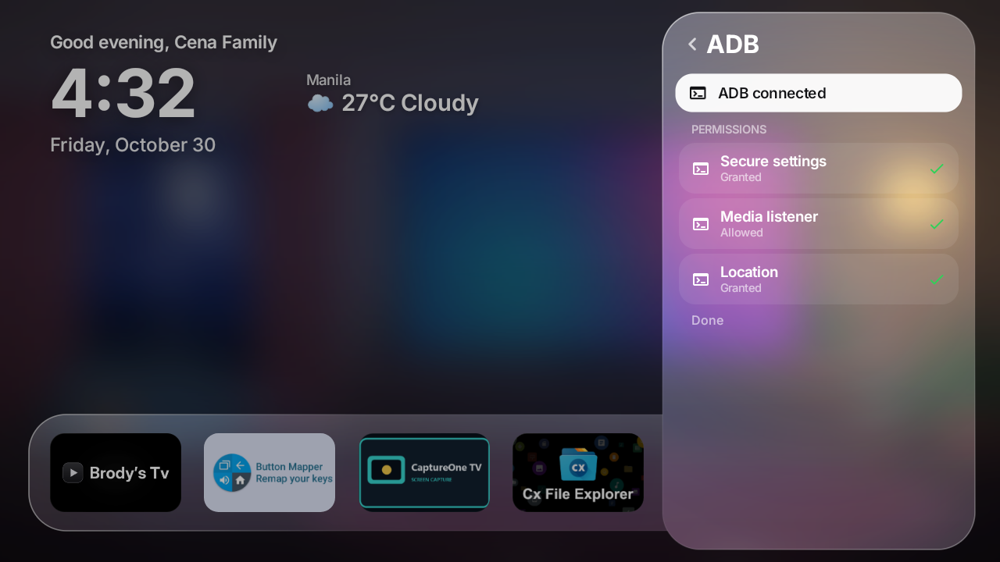

A tvOS-inspired home screen made of liquid glass, with weather, lyrics, media controls and a Control Center for your TV.
Download the APK View on GitHub
Play, pause and skip from the home screen without opening the music app. Lyrics follow the song as it plays.

Slides in from the right with Wi-Fi, Bluetooth, volume, Top Shelf, hidden apps, wallpaper and animation speed.

Turn the Verse, Music, Lyrics and Weather widgets on or off from the Control Center.

The Control Center works as an overlay on top of other apps, using an Android accessibility service.

See whether ADB is connected and whether the secure settings, media listener and location permissions are granted.

Current weather next to the clock.
Jump back to what you used last.
An accessibility setting so the Home button opens Glass.
A mode that follows the sky and weather, plus your own photo.
English, French, Spanish, Portuguese and German.
Code, issues and releases are on GitHub.
Free and open source. Download the APK from the latest release.
Download the latest APKSettings › Apps › Special app access, allow unknown sources for the app you open the APK with.adb install Glass.apk from a computer.